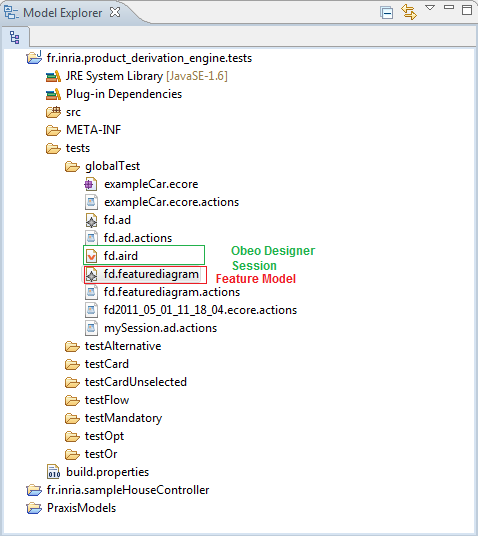

We suppose you have a feature model created with the feature diagram editor tool and the corresponding Obeo Designer session :

![[Important]](gfx/admonitions/important.gif) | Obeo Designer session must be open |
|---|---|
Be sure Obeo Designer session for the feature model is opened. So, double click on the session file (.aird) if it is not the case. |
To select features on the fearture model simply right click on the feature model (here fd.featurediagram) ->Movida-> Select features.
You obtain the following view in your Eclipse :

Open the new resolution model file (here fd2011_10_14_10_44_12.resolutionmodel) and check features you want to select :
Each icon corresponds to given operator that reference the feature :
 : mandatory operator
: mandatory operator: optional operator
 : Card operator
: Card operator : Or operator
: Or operator: alternative operator (Xor)
Icons for unselected feature are grayed out.
This section shows you how to create a new resolution model to store selected or unselected features. The next section present how to derive this resolution model to obtain a resolved model (product model).